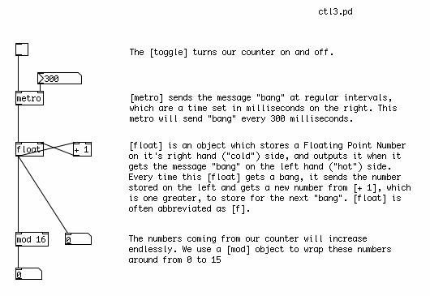
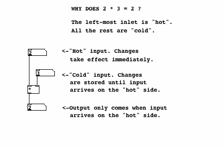
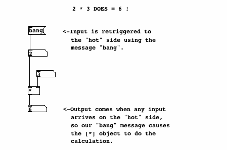

Building a 16-Step Sequencer
Besides using a keyboard, another way to control a synthesizer is with a Sequencer, which stores MIDI Notes and plays them back in sequence, and at a speed which can be changed from faster to slower.
A Counter
Before we can build the note-storing section of the Sequencer, however, we have to learn a little bit about dataflow in Pd in order to make a counter. This counter will count from 0 to 15, and each number it sends out will trigger one of the steps in a 16-Step Sequencer.
The patch below shows a counter, built with basic Pd objects.

[metro] is used to send the message "bang" every so many milliseconds. This interval is set by a Number sent to the right inlet. The [metro] is turned on and off by sending either a "1" or a "0" to the left inlet. We use the [toggle] object to send these messages.
Hot and Cold
Below the [metro] is a construction which takes advantage of one of the most fundamental lessons in learning about dataflow in Pd: "hot" and "cold" inlets. The left-most inlet of almost any non-audio Pd object is called the "hot" inlet. Any input to the hot inlet of an object gives immediate output. Any other inlet to the right of the hot inlet is called a "cold" inlet. Input to a cold inlet is stored in the object, waiting for input on the hot side. In this case, when a new number comes to the hot side of the [*], it is multiplied by the number stored in the cold side. The information in the cold inlets is kept there until new information received at that inlet changes it, or until the object is re-created (by retyping its name, cutting/pasting the object or by reopening the patch).


So in our counter, there is an object called [float], which stores and outputs a Floating Point Number. Floating Point Number is another name for a number with a decimal place, usually called simply a "float". The opposite of a "float" is an Integer, or "int", which has no decimal place. All numbers in Pd are assumed to be floats. When [float] receives a "bang" to its left ("hot") inlet, it outputs the float which is stored on it's right ("cold") inlet. When this [float] outputs a number, it is also sent to the inlet of a [+ 1] object, where 1 is added to that number and sent back to the "cold" inlet of [float] to wait for the next "bang". So, every time this construction receives a "bang", the number it will output will be 1 more than before.
For more information on "hot" and "cold", as well as other descriptions of how to get used to how dataflow works in Pd, please see the Dataflow Tutorials in this FLOSS Manual.
The numbers sent from our counter will increase endlessly. In order to keep them within the bounds of our 16-Step Sequencer, we need a way to "wrap" these numbers around so that they start over when the counter reaches 16, and every other division of 16 that comes later on. [mod] is the object which does this. Technically, [mod] means "modulo", and it outputs the remainder of a division operation using the number in the creation argument. Thus "16" becomes "0", "17" becomes "1", "18" becomes "2" and so on.
Storing and Retrieving MIDI Note Values
In the next patch, we see how to store and recall a number from an [hslider] using the [float] object as well. Here, [float] has been abbreviated to the commonly used [f]. At the bottom of our counter construction from the previous example, we have replace the Number with an [hradio] array of buttons, so that we can see which step of our Sequencer we are at. (Right or Control+Click on the [hradio] to see its properties, and type "16" in the "number" field to set the size.)
Below the counter we have the object [select]. This object checks the input on its left inlet against either the input on the right inlet, or in this case against a series of creation arguments. When the input on the left matches one of the creation arguments, then the message "bang" comes out of the corresponding outlet. Thus, an input of "0" will send a "bang" out the first outlet, an input of "1" sends a"bang" out the second outlet, etc etc. In this way, we have a separate "bang" for each step in the Sequencer.
For each step in the Sequencer, we will use a [f] object to store a MIDI Note send from a [vslider]. The range of the [vslider] is 0-127, and the number it outputs is sent to the "cold" inlet of [f], to wait for a "bang" to come to the "hot" inlet. When that "bang" comes, the MIDI Note is sent out. You can change the value of the [vslider] with the mouse at any time, and the MIDI note will only be sent at step 0 of the sequence.

The Finished 16-Step Sequencer Patch
And here we have the finished patch, with all 16 steps included, connected to a simple synthesizer. Each step of the sequence sends a MIDI Note to [mtof], which controls the frequency of a [phasor~] as well as the frequency of a Band Pass Filter [bp~]. The creation arguments of the [bp~] set it's starting frequency as 220 Hz, but this is changed every time it receives a new number from the [mtof], which has been multiplied by 1.5 to make the center frequency of the filter a half octave above that of the Sawtooth Oscillator [phasor~]. The resonance is set very high, at "5", so the harsh sound of the [phasor~] is softened.

In this version, no Envelope Generator is used, so the volume of the audio going to the soundcard remains constant. This leads to noticeable clicks when the frequencies of the MIDI Notes change. An Envelope Generator based on [line~], [vline~] or [tabread4~] could be inserted between the output of [bp~] and the [dac~] if desired.